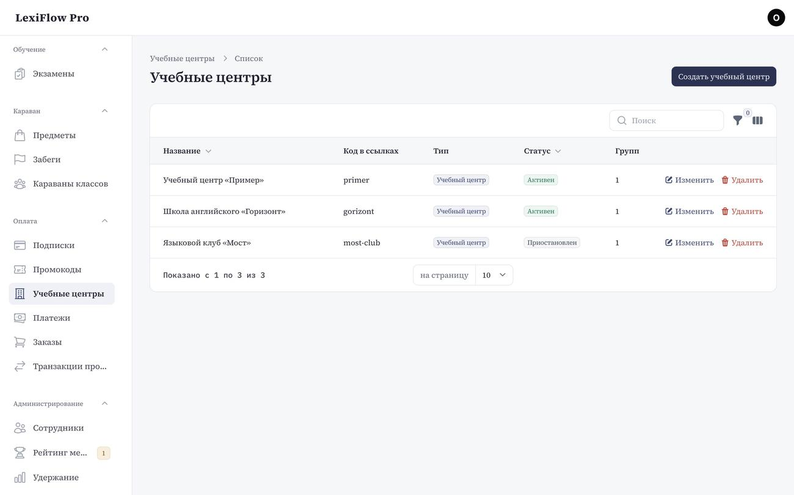
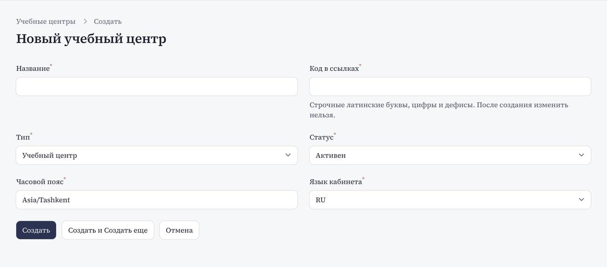
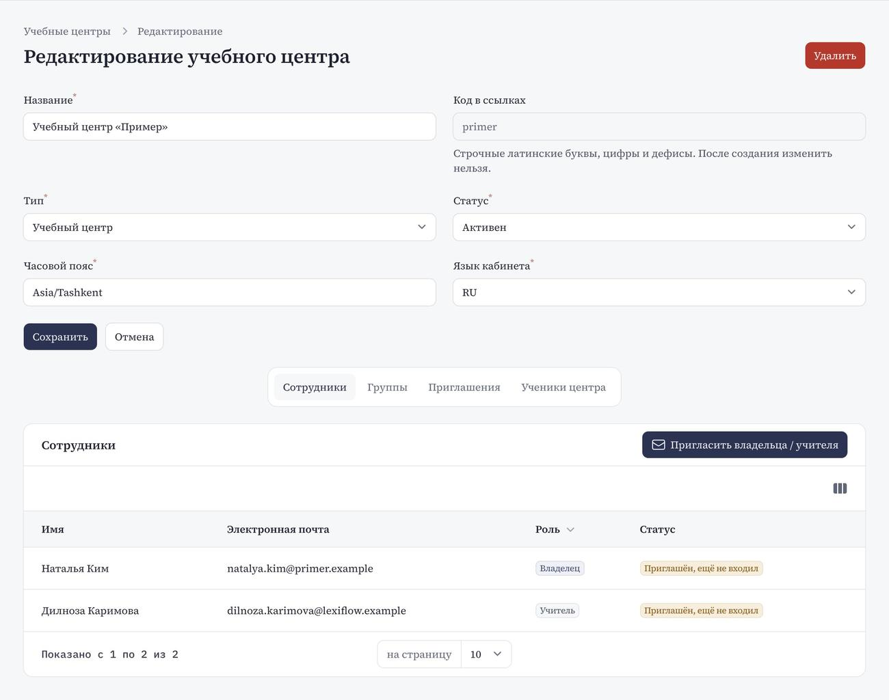
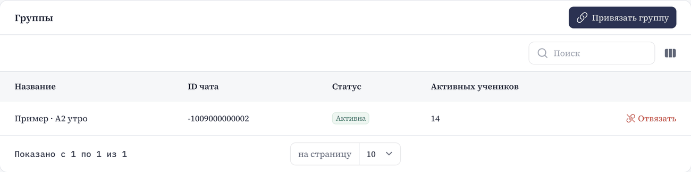
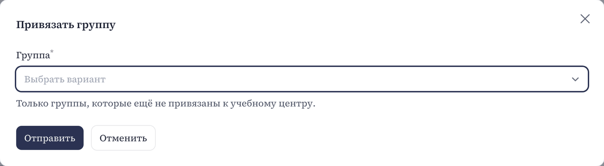
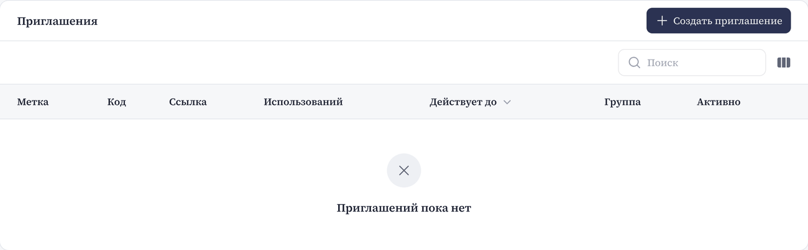
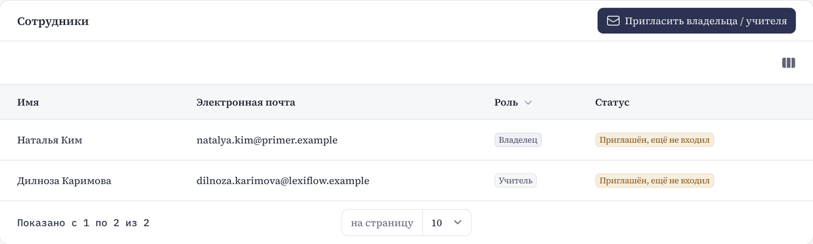
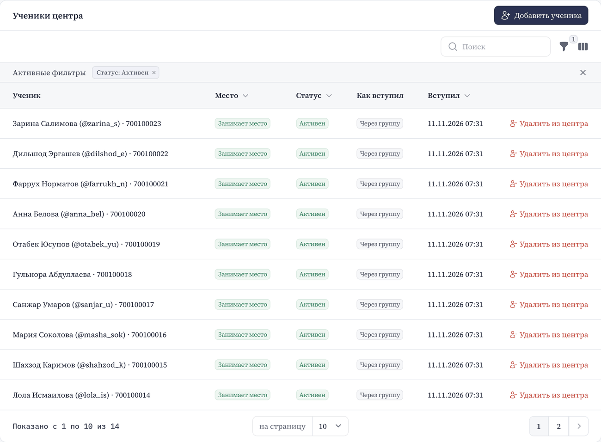
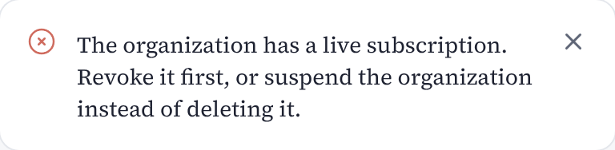

Учебный центр (организация) — школа, курсы или репетитор, который оплачивает Pro своим ученикам и работает в своём кабинете /org. Раздел Оплата → Учебные центры — для администратора: создать центр, пригласить его владельца, привязать группы, посмотреть и поправить состав учеников, приостановить или удалить центр.

Поиск — по названию и коду, фильтр — по статусу.

| Поле | Что вводить |
|---|---|
| Название | как центр называют ученики |
| Код в ссылках | строчные латинские буквы, цифры и дефисы; после создания не меняется |
| Тип | «Учебный центр» |
| Статус | «Активен» или «Приостановлен (Pro для учеников не действует)» |
| Часовой пояс | по нему кабинет показывает даты и сроки заданий |
| Язык кабинета | RU или UZ |

Telegram-группы центра: название, ID чата, статус, число активных учеников. Каждый активный участник активной привязанной группы получает Pro от центра (пока у центра действует подписка и хватает мест).


Сделайте бота администратором группы в Telegram: тогда Telegram сообщает о каждом выходе и удалении участника, и ушедший ученик вовремя теряет Pro от центра.
Коды и ссылки, по которым ученики вступают в центр без группы: метка, код, ссылка, сколько раз использована, срок, группа-метка, активно ли. Создать приглашение — метка для себя, необязательные максимум использований и срок. Отключить — ссылка перестаёт работать сразу, вступившие остаются.

Владельцы и учителя кабинета центра: имя, почта, роль, статус («Приглашён, ещё не входил» или «Входил в кабинет»). Кнопка Пригласить владельца / учителя отправляет письмо со ссылкой для создания пароля; если человек уже есть в системе, он получит письмо о том, что его добавили в центр.

Членства учеников: ученик, Telegram ID, место («Занимает место», «В очереди», «Без места»), статус («Активен», «Вышел», «Удалён»), как вступил («По коду», «Через группу», «Добавлен вручную»), даты.

Поставьте Статус «Приостановлен» и сохраните. Pro от центра у учеников отключается в течение нескольких секунд, ничего не удаляется. Приостановленный центр не может и платить онлайн. Верните статус «Активен» — всё заработает снова.
Кнопка Удалить в строке списка. Центр с действующей подпиской или привязанными группами удалить нельзя: панель покажет причину. Сейчас это сообщение на английском, например «The organization has a live subscription. Revoke it first, or suspend the organization instead of deleting it.» (у центра действующая подписка — сначала отзовите её или приостановите центр вместо удаления) или «…still has linked groups…» (есть привязанные группы — сначала отвяжите их).

Удаление центра необратимо. В большинстве случаев достаточно приостановки: она так же отключает Pro, но сохраняет историю и позволяет вернуть центр одним действием.